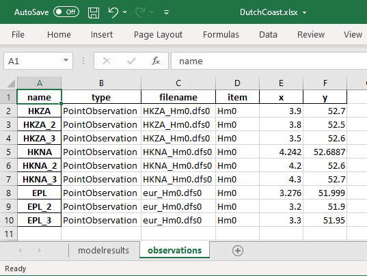
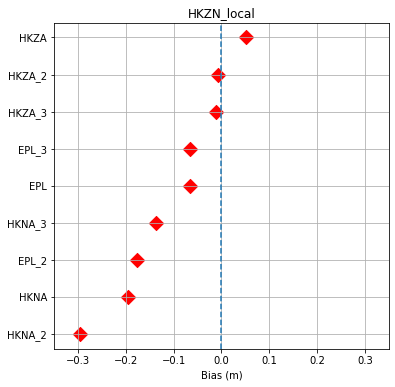

from fmskill import PointObservation
from fmskill import ModelResult, Connector
Model skill visualisation¶
fn = 'data/SW/HKZN_local_2017_DutchCoast.dfsu'
mr = ModelResult(fn, name='HKZN_local', item=0)
obs = [PointObservation('data/SW/HKZA_Hm0.dfs0', item=0, x=3.9, y=52.7, name="HKZA"),
PointObservation('data/SW/HKZA_Hm0.dfs0', item=0, x=3.8, y=52.5, name="HKZA_2"),
PointObservation('data/SW/HKZA_Hm0.dfs0', item=0, x=3.5, y=52.6, name="HKZA_3"),
PointObservation('data/SW/HKNA_Hm0.dfs0', item=0, x=4.2420, y=52.6887, name="HKNA"),
PointObservation('data/SW/HKNA_Hm0.dfs0', item=0, x=4.2, y=52.6, name="HKNA_2"),
PointObservation('data/SW/HKNA_Hm0.dfs0', item=0, x=4.3, y=52.7, name="HKNA_3"),
PointObservation("data/SW/eur_Hm0.dfs0", item=0, x=3.2760, y=51.9990, name="EPL"),
PointObservation("data/SW/eur_Hm0.dfs0", item=0, x=3.2, y=51.9, name="EPL_2"),
PointObservation("data/SW/eur_Hm0.dfs0", item=0, x=3.3, y=51.95, name="EPL_3")
]
con = Connector(obs, mr)
Save and load configuration¶
Specifying the model-observation connection in Python code is not the only way. You can also use Excel or a text file in yaml format to store the configuration.
Excel¶
# save as Excel file
con.to_config("data/SW/DutchCoast.xlsx")

# Read config file
con = Connector.from_config("data/SW/DutchCoast.xlsx")
con
<Connector> with
-<PointConnector> obs=HKZA(n=575) :: model=HKZN_local
-<PointConnector> obs=HKZA_2(n=575) :: model=HKZN_local
-<PointConnector> obs=HKZA_3(n=575) :: model=HKZN_local
-<PointConnector> obs=HKNA(n=564) :: model=HKZN_local
-<PointConnector> obs=HKNA_2(n=564) :: model=HKZN_local
-<PointConnector> obs=HKNA_3(n=564) :: model=HKZN_local
-<PointConnector> obs=EPL(n=94) :: model=HKZN_local
-<PointConnector> obs=EPL_2(n=94) :: model=HKZN_local
-<PointConnector> obs=EPL_3(n=94) :: model=HKZN_local
Data analysis¶
cc = con.extract()
cc.skill()
| n | bias | rmse | urmse | mae | cc | si | r2 | |
|---|---|---|---|---|---|---|---|---|
| observation | ||||||||
| EPL | 66 | -0.066028 | 0.224919 | 0.215009 | 0.189791 | 0.969512 | 0.078551 | 0.932082 |
| EPL_2 | 66 | -0.195815 | 0.295575 | 0.221408 | 0.255748 | 0.967011 | 0.080888 | 0.882707 |
| EPL_3 | 66 | -0.066028 | 0.224919 | 0.215009 | 0.189791 | 0.969512 | 0.078551 | 0.932082 |
| HKNA | 386 | -0.194260 | 0.351964 | 0.293499 | 0.251839 | 0.971194 | 0.088669 | 0.905300 |
| HKNA_2 | 386 | -0.296194 | 0.430783 | 0.312799 | 0.325512 | 0.969579 | 0.094500 | 0.858137 |
| HKNA_3 | 386 | -0.135648 | 0.298130 | 0.265482 | 0.210063 | 0.975813 | 0.080205 | 0.932054 |
| HKZA | 397 | 0.051763 | 0.285233 | 0.280497 | 0.222436 | 0.965938 | 0.090669 | 0.930484 |
| HKZA_2 | 397 | -0.081574 | 0.284985 | 0.273060 | 0.217139 | 0.969767 | 0.088266 | 0.930605 |
| HKZA_3 | 397 | -0.011184 | 0.278949 | 0.278725 | 0.218145 | 0.966900 | 0.090097 | 0.933514 |
s = cc.skill()
type(s)
fmskill.skill.AggregatedSkill
s.plot_bar('rmse')
<AxesSubplot:title={'center':'rmse'}, xlabel='observation'>
s.plot_line('urmse')
[<AxesSubplot:title={'center':'urmse'}, xlabel='observation'>]
Custom plot¶
All skill statistics are available in a dataframe, and in case you need a tailor-made plot, you can get data and use matplotlib to get exactly what you need.
import matplotlib.pyplot as plt
df = s.df.sort_values('bias')
x = df.bias
y = df.index
plt.subplots(figsize=(6,6))
plt.scatter(x,y,marker='D',c='red',s=100)
plt.xlim(-0.35,0.35)
plt.axvline(0,linestyle='--')
plt.xlabel("Bias (m)")
plt.title(mr.name)
plt.grid()
